Genel Bilgiler
Hem Araçlar menüsünden hem de TOPOGRAFYA  →
YARDIMCI ARAÇLAR'dan erişilebilen bu araç, lazer tarama (LiDAR) kaynaklı milyonlarca nokta içeren dosyaları işlemeye olanak tanır. →
YARDIMCI ARAÇLAR'dan erişilebilen bu araç, lazer tarama (LiDAR) kaynaklı milyonlarca nokta içeren dosyaları işlemeye olanak tanır.
Aracın amacı, gelecekteki üçgenleme işlemleri, topoğrafik düğüm noktası düzenlemesi, eş yükselti eğrisi oluşturma vb. için bilgiyi veri paketleri halinde işlemektir.
Bu menü,  ikonu aracılığıyla alt pencereleri daraltmaya veya genişletmeye olanak tanır. ikonu aracılığıyla alt pencereleri daraltmaya veya genişletmeye olanak tanır.
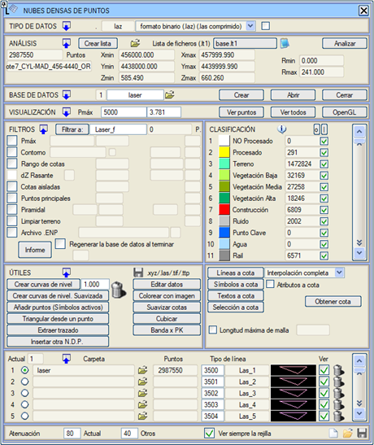
Program tarafından işlenecek nokta sayısı konusunda herhangi bir sınırlama yoktur, ancak bilgisayar donanımının gücüne bağlı bir miktar bağımlılık bulunmaktadır.
Bu araç seçildiğinde, yukarıdaki resimde gösterilen iletişim kutusu belirir.
İzlenecek adımlar şunlardır:
- Veri tipini (dosyaların formatı ve uzantısı) tanımlayın.
- Verileri içeren dosyaların adlarını içeren bir listeye dayanarak noktaların analizini yürütün.
- Bir grid'e (ızgaraya) göre veritabanını oluşturun.
- Verileri farklı kriterlere göre görselleştirin (tek renk, yansıtıcılık veya kot).
- Veritabanını hafifletmek ve istenmeyen noktaları kaldırmak için bilgiyi filtreleyin.
- Örneğin, eş yükselti eğrileri ve/veya programın diğer bölümlerinde ilgi çekici olabilecek, zaten filtrelenmiş verileri içeren bir nokta dosyası elde etmeye olanak tanıyan çeşitli yardımcı araçları kullanın.
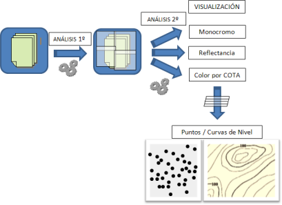
Veri Tipleri
VERİ TİPİ'ne ayrılmış bölümde, bilgiyi içeren ASCII dosyalarının uzantısı ve formatı seçilebilir.
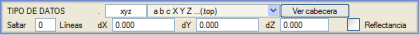Dosya uzantısı kullanıcı tarafından en fazla 4 karakterle belirtilir, varsayılan olarak .xyz'dir. Format olarak, her noktanın X,Y,Z koordinatlarını içeren en az 3 sütuna sahip nokta dosyalarıdır, ancak koordinatlardan önce örneğin nokta numarası, yansıtıcılık veya başka bir parametreye karşılık gelen sütunlar da olabilir. Örneğin, a b c X Y Z şeklinde bir format seçilirse, program 6 sütunlu bir veya daha fazla dosya bekler; ilk 3 sütun noktanın bir parametresine, son 3 sütun ise koordinatlarına karşılık gelir. Tanımlanan farklı ASCII formatları, sütun ayırıcı olarak boşlukların " " yanı sıra virgül "," ve noktalı virgülü ";" de kabul eder.
Program ayrıca diğer çeşitli nokta bulutu dosya formatlarını da destekler: .las/.la20, .laz, .pts, .e57...
.pts dosyaları için format aşağıdaki ikisinden biri olmalıdır:
- X Y Z YANSITICILIK KIRMIZI YEŞİL MAVİ
- X Y Z YANSITICILIK
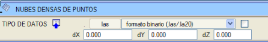
Gerçek renge sahip olmayan bir .las dosyası yüklenirken bir arka plan görüntüsü varsa, program yüklenen noktaları görüntü ile renklendirmeye izin verir, böylece görüntü her noktaya kendi rengini yansıtır. Bu işlemi gerçekleştirebilmek için görüntüyü yüklemiş olmamız ve Görüntü ile Renklendir kutucuğunu işaretlememiz gerekir (Yardımcı Araçlar bölümünde açıklanmıştır).
.pts uzantılı ASCII dosyalarını yüklemeye izin verir: İlk satırda toplam nokta sayısı bulunur ve ardından her satırda yedi değerli bir nokta bulunur: X Y Z yoğunluk(yansıtıcılık) R G B.
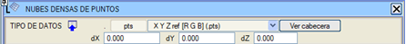
Veri Tipi bölümünde bazı ek seçenekler kullanabiliriz:
Analiz
Analizi yapmadan önce, veri setini oluşturan tüm nokta dosyalarının adlarını içeren bir liste oluşturmak gerekir.
Giriş dosyalarının listesini dosya seçici aracılığıyla oluşturma imkanı vardır, hatta dosyalar çalışma klasöründen farklı bir klasörde olabilir. Bu durumda her zaman ISPOL.lt1 listesi oluşturulur.
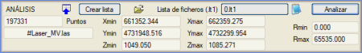
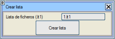Veriler tek bir dosyada olsa bile bu liste oluşturulmalıdır. Bunun için [Liste Oluştur] butonuna basılır, ardından listeyi içerecek dosyanın adını belirtmeniz gereken bir iletişim kutusu belirir. Dosya oluşturulduktan sonra (.lt1 uzantılı), program çalışma dizininde bulabildiği, veri tipinde belirtilen uzantıya sahip tüm dosyaları listeye otomatik olarak ekler. Diğer yandan, [Düzenle] butonu, listeye eleman ekleyerek veya çıkararak değiştirilebilmesi için dosyanın içeriğini gösterir.
Liste oluşturulduktan sonra, [Analiz Et] butonuna basarak tüm noktaları işlemek mümkündür. Program listedeki dosyaları analiz eder, toplam nokta sayısını ve X, Y, Z ve yansıtıcılığın maksimum ve minimum değerlerini belirler.
Veritabanı
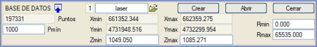Nokta bulutunun tamamını analiz ettikten sonra, elde edilen tüm bilgilerle bir veritabanı oluşturma zamanı gelmiştir. Bu veritabanının amacı, işlendikten sonra tüm bilgiyi yeniden düzenlemek ve kullanıcının tüm verileri tekrar analiz etmesine gerek kalmadan herhangi bir zamanda geri alabilmesi için depolamaktır.
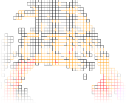Bu veritabanını oluştururken noktalar düzenli bir grid'e göre gruplandırılır. Oluşturulan hücre sayısı, hücre başına minimum ortalama nokta sayısı olan pmin parametresine göre hesaplanır (programın maksimum bir hücre sayısı olduğu için bu minimumdur).
Hücreler, içerdiği nokta sayısına göre farklı renklerde gösterilir, bu da lazer tarayıcı tarafından alınan farklı nokta yoğunluklarını bir bakışta ayırt etmeyi sağlar.
Veritabanı varsayılan olarak çalışma klasörünün laser adlı bir alt klasöründe oluşturulur, ancak kullanıcı isterse başka bir ad belirleyebilir.
Veritabanı oluşturulduktan sonra, [Aç] butonuna basılarak herhangi bir zamanda geri yüklenebilir, bu da programla başka bir çalışma oturumunda noktaları yeniden analiz etme zorunluluğunu ortadan kaldırır.
[Kapat] butonu, iş bittikten sonra belleği boşaltmak için aktif veritabanının tüm veri dosyalarını kapatır. Bu adım, ardından başka bir veritabanı yüklemek isteniyorsa gereklidir.
Program, bir lazer veritabanı oluştururken, .las dosyalarından aşağıdaki bilgileri çıkarır:
- Noktanın X,Y,Z koordinatları
- Yansıtıcılık
- Gerçek renk (r,g,b). Bu değer gelmezse, bölgenin bir görüntüsünden Görüntü ile Renklendir aracıyla atanabilir.
- 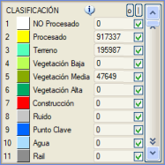Sınıflandırma:
Noktalar kategorilere ayrılabilir, örneğin: Zemin, Alçak Bitki Örtüsü, Orta Bitki Örtüsü, Yüksek Bitki Örtüsü, Yapılar, Su, Kilit Noktalar, Gürültü, vb... İlk 64 kategori rezerve edilmiştir, ancak noktalar 256 farklı kategoriye kadar sınıflandırılabilir.
ikonuna basıldığında program, veritabanında her tipten kaç nokta olduğunu otomatik olarak sayar.
Hem görselleştirmede hem de bir arazi modeli (eş yükselti eğrileri, profiller vb.) oluşturmak için farklı kategoriler aktif edilebilir/pasif hale getirilebilir. Örneğin, sadece Zemin noktaları aktif bırakılarak diğer tümü pasif hale getirilebilir.
Sınıflandırmanın aktivasyon durumu, her zaman grid'i görme seçeneğinin yanı sıra yapılandırma dosyasına (ispol.cfg) kaydedilir/geri yüklenir.
Görselleştirme
Veritabanı oluşturulduktan sonra, verileri farklı kriterler kullanarak ekranda görselleştirmek mümkündür:
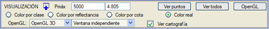
- Sınıfa Göre Renklendir:
Noktalar sınıflandırmalarına göre renklendirilir.
- Yansıtıcılığa Göre Renklendir:
Noktalar yansıtıcılıklarına göre renklendirilir.
- Kota Göre Renklendir: Noktalar kotlarına göre renklendirilir.
- Gerçek Renk. Noktalar, dosyada tanımlanan RGB renklerine (veya Görüntü ile Renklendir kullanarak tanımladığımız renklere) göre renklendirilir.
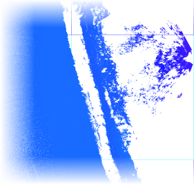Eğer toplam nokta miktarı çok fazlaysa, bunların gösterimi çok yavaş olabilir. Bu sorunu önlemek için, hücre başına veya metrekare başına görüntülenecek maksimum bir nokta sayısı belirtilebilir ve sadece bu noktaları görüntülemek için [Noktaları Gör] butonuna basılabilir. Eğer [Tümünü Gör] butonuna basılırsa, verilerin tamamı ekranda gösterilir.
Eğer [OpenGL] butonuna basarsak, lazer veritabanının içeriğini 2B veya 3B bir pencerede ve gerçek zamanlı olarak (varsayılan seçenek) görebiliriz. Veritabanı, hızlı bir şekilde çizilebilmesi için "tamamen" belleğe aktarılır.
3B görselleştirme, [OpenGL] butonuna basıldığında gösterilen menü ile yapılandırılır:
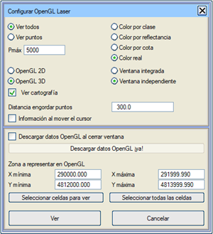
Bu menünün seçenekleri şunlardır:
- Tümünü Gör / Noktaları Gör: Veritabanındaki tüm noktaların mı yoksa hücre başına belirli sayıda noktanın mı dikkate alınacağını belirtir.
- Pmaks: "Noktaları Gör" seçeneği seçilirse, her hücreden okunacak maksimum nokta sayısını belirtir.
- Sınıfa / Yansıtıcılığa / Kota / Gerçek Renge Göre Renklendir: Veritabanındaki noktaların renklendirme modunu belirtir. Yansıtıcılık veya gerçek renk, lazer veritabanında mevcut olmalıdır.
- OpenGL 2D: Noktaları, ya entegre pencerede ya da bağımsız bir pencerede iki boyutlu olarak gösterir.
- OpenGL 3D: Noktaları, ya entegre pencerede ya da bağımsız bir pencerede üç boyutlu olarak gösterir.
- Haritayı Göster: OpenGL penceresinde sayısal haritayı görmeye olanak tanır.
- Entegre Pencere: Noktaların 2B veya 3B olarak gösterimini ISTRAM'ın kendi penceresinde gösterir.
- Bağımsız Pencere: Noktaların 2B veya 3B olarak gösterimini bağımsız bir pencerede gösterir.
- Nokta Büyütme Mesafesi: Kameradan bakılan geometri noktasına (pencerenin merkezi) kadar ölçülen, metre cinsinden mesafeyi belirtir. Kamera bu noktaya yaklaştıkça, noktalar bilginin sürekliliği hissini daha iyi vermek için "büyütülür".
- İmleç Hareket Ederken Bilgi:
Bu kutucuk aktif edildiğinde, program her noktanın bilgisini sadece fare imlecini üzerine getirerek verir. Gösterilen bilgi, koordinatlar, renk, yansıtıcılık ve sınıfla ilgilidir. Bu kutucuk aktif edilmezse, OpenGL penceresinde bu bilgiyi sol üst köşede her noktanın üzerine farenin sol tuşuyla tıklayarak görebiliriz.
- Pencere Kapatıldığında OpenGL Verilerini Kaldır:
OpenGL penceresi kapatıldığında, veritabanı bilgisinin bellekten otomatik olarak kaldırılıp kaldırılmayacağını belirtir (lazer veritabanının kendisine bir şey olmaz). Başka bir görselleştirme için bu bilginin tekrar okunması gerekecektir.
- OpenGL Verilerini Şimdi Kaldır
!:
Görselleştirme için okunan veritabanı noktalarının kapladığı belleği serbest bırakmaya olanak tanır. Bu seçenek yalnızca veriler okunduktan ve pencere bilgi indirilmeden kapatıldıktan sonra kullanılabilir. Bu bilgi, bu butonla serbest bırakılana, "Kaldır" seçeneği işaretliyken OpenGL penceresi kapatılana veya ISTRAM'dan çıkılana kadar bellekte kalır.
- OpenGL'de Gösterilecek Alan: Noktaların hangi XY koordinatları arasında görselleştirileceğini sınırlamaya olanak tanır. Koordinatları doğrudan yazarak, fareyi kullanarak (Görülecek Hücreleri Seç) veya Tüm Hücreleri Seç'i kullanarak tüm noktaları seçebiliriz.
Bu görselleştirmede gezinme, "3B Görünüm" ile aynıdır.
- Farenin sol tuşu: Bakılan noktayı seçer.
- Fare tekerleği: Kamerayı noktalara yaklaştırır veya uzaklaştırır.
- Fare tekerleği (buton olarak kullanılırsa) veya orta tuş, fareyi sürükleyerek: Kameranın görüntünün merkezindeki nokta etrafında dönmesini sağlar.
- Farenin sağ tuşu, fareyi sürükleyerek: Kamerayı noktalar üzerinde kaydırmaya olanak tanır.
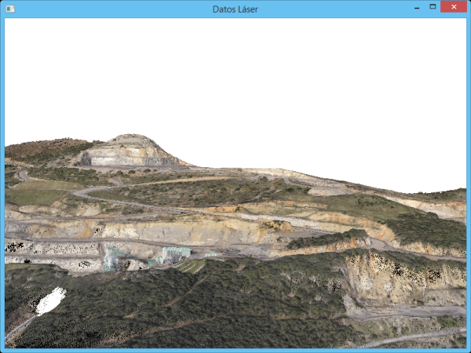
Filtreler
Az önemli veya hatalı bilgi sağlayan noktaları kaldırmak ve böylece süreci hızlandırmak amacıyla veritabanını filtrelemek mümkündür.
Bu noktada, verilerin tarayıcıya olan mesafelerine ve azimut ile zenit açılarına göre sıralanmış olduğu unutulmamalıdır. Bunu göz önünde bulundurarak, olası filtreleme kriterleri şunlardır:
- Hücre Başına Maksimum Nokta Sayısı (Pmaks): Görselleştirme kriterine benzer bir kriterdir; yani program, grid'in her bir hücresi için en fazla burada belirtilen sayıda nokta tutar. Noktaların filtrelenmesi ardışık olarak yapılır, böylece örneğin bir hücrede 50.000 nokta varsa ve en fazla 5.000 kabul edileceği belirtilmişse, program her on veriden birini alır.
- Kontur: Bir kapalı alan (kapalı bir çoklu doğru) seçmeye olanak tanır. Eğer [ ]Aynı Tip kutucuğu aktifse, aynı çizgi tipini kullanan kapalı alanlar da seçilir. Bu filtre, İçinde/Dışında seçeneğine göre sadece kapalı alanın içinde/dışında kalan noktaları tutar. Eğer Ayır seçeneği kullanılırsa, her kapalı alanda bulunan noktalarla yeni bir veritabanı oluşturulur ve ilgili .las dosyası oluşturulur. Eğer İçinde Filtrele tipi seçilirse, program geri kalan filtreleri sadece belirtilen tipteki kapalı alanın veya alanların içindeki noktalara uygular. Dışarıdaki noktalar değiştirilmez.
- Kot Aralığı: [Zmin,Zmaks] aralığında olmayan tüm noktalar atılır. Bu, özel bir durum nedeniyle alınmış olan noktaları (örneğin, bölgeden geçen bir kuş) dikkate almamak için kullanışlıdır.
- dZ Kırmızı Kot SAĞ/SOL: [Kırmızı Kot +/- dZ] aralığında olmayan tüm noktaları atar. Sadece bu Yoğun Nokta Bulutları penceresi, Güzergah Esaslı Projeler modülünün Kırmızı Kot sekmesi açıkken kullanılabilir.
- Aykırı Kotlar: Bir bölgedeki, kotu en yakın noktaya göre dZ'de belirtilen değerden daha fazla farklılık gösteren noktaları siler, yani "sivrilikleri" ortadan kaldırır.
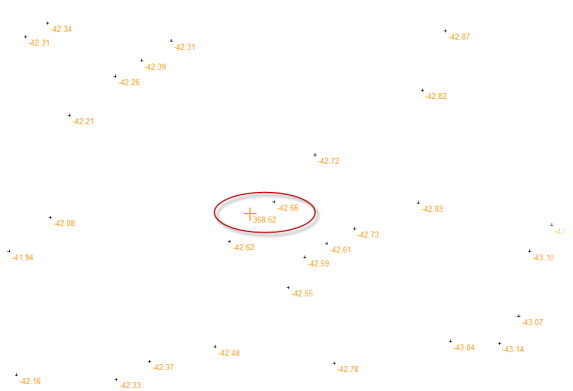
- Ana Noktalar: Koordinatları doğru olsa da aslında sete önemli bir bilgi katmayan hizalı noktaları (doğrusal noktaları) ortadan kaldırmaya olanak tanır. Bu filtreleme, belirtilen yanal toleransa göre yapılır.
- Piramidal: Bu filtre, topografyadaki üçgen filtresine eşdeğerdir. Bir minimum dZ, maksimum dZ ve bir Maksimum Mesafe ile tanımlanır.
- Zemini Temizle: Çevresindeki noktalara göre belirli bir şev eğimini aşan tüm noktaları siler. Bir tünelin kemerlerini, binaları, ağaçları, direkleri, araçları vb. kaldırmak için çok kullanışlıdır.
- .ENP Dosyası: Birkaç işlemi art arda gerçekleştirmek için bir .enp filtreleme komutları dosyasını yüklemeye olanak tanır.
Her bir seçeneğin yanında, sınıflandırmalardan birinin numarasını veya 0 yazabileceğiniz bir kutucuk bulunur. Bir sınıflandırma numarası girilirse, filtreleme yapıldığında filtrelenen bu noktaları belirtilen sınıflandırmaya yerleştirir. Eğer 0 girilirse, filtrelenen noktalar basitçe veritabanından silinir.
Bittiğinde veritabanını yeniden oluştur:
Eğer veritabanını filtreledikten sonra kalan nokta sayısı orijinalinden çok daha az ise, yeni nokta yoğunluğuna daha uygun bir hücre dağılımı oluşturmak için bu seçeneği aktif etmek tavsiye edilir. Sadece belirli bir sınıfı tutmayı seçebilir veya hepsini kaydetmek için Kaydedilecek Sınıf kutusuna 0 koyabilirsiniz.
[Filtrele:] seçili filtreleri uygular ve bitişik alanda belirtilen klasörde yeni bir veritabanı oluşturur. Eğer o alanda orijinal veritabanıyla aynı ad belirtilirse, orijinal veritabanının filtrelenmiş yenisiyle değiştirileceğine dair bir uyarı gösterilir ve kullanıcının onayı istenir.
[Rapor], filtrelemeden önceki ve sonraki nokta sayısı, uygulanan filtreler ve her biriyle silinen nokta sayısı hakkında bilgi içeren bir dosya gösterir.
Yardımcı Araçlar
Bu bölümde, işlenmiş nokta bulutunu kullanmak için bir dizi temel yardımcı araç sunulmaktadır:
Bu bölüm, Eş Yükselti Eğrileri Oluştur kutucuğundan kotta bir eğri aralığına göre eş yükselti eğrileri oluşturma imkanı sunar. Diğer yandan, Yumuşatılmış Eş Yükselti Eğrileri Oluştur komutu aracılığıyla program, düzenli olabilen veya olmayan bir grid üzerinde dahili bir veritabanı oluşturur. Bu yeni veritabanı üzerinde eş yükselti eğrileri oluşturmaya olanak tanır. Üçgenlemeye gerek kalmadan eş yükselti eğrileri oluşturulur, bu da süreci hızlandırır. Yumuşatılmış Eş Yükselti Eğrileri Oluştur kutucuğuna tıklandığında aşağıda göreceğimiz bir kutu belirir.
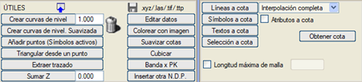
- Eş Yükselti Eğrileri Oluştur:
Nokta bulutundan, butonun yanındaki kutucukta belirtilen eğriler arası mesafeyi kullanarak eş yükselti eğrileri oluşturur. Filtreler'de Kontur aktifken ve geçerli bir çizgi seçildiğinde, oluşturulan eş yükselti eğrileri yalnızca o kapalı alanın İçinde/Dışında veya [ ]Aynı Tip'teki tüm alanlarda oluşturulacaktır.
- Yumuşatılmış Eş Yükselti Eğrileri Oluştur:
Bu seçenekle, noktaların orijinal konumunu değiştirmeden çevresindekileri kullanarak kotlarını yumuşatma ve ardından bir grid üzerinde eş yükselti eğrileri oluşturma imkanımız vardır. Aşağıdaki bilgiler gereklidir:
- Eş yükselti eğrileri arası mesafe: önceki seçenekle aynı.
- Noktalar arası mesafe:
Yeni veritabanı, düzenli bir grid üzerinde yer alan noktalardan oluşur ve burada grid'in çözünürlüğü verilir. Bu mesafe, orijinal verilerin ortalama nokta mesafesinden daha büyük olmalıdır.
- Arama mesafesi:
Her yeni nokta, kotunu hesaplamak için bu mesafe içindeki noktaların kotunu kullanır.
- Ağırlık katsayısı ve ağırlık eğrisi: Daha yakın noktalara daha fazla, daha uzak olanlara daha az ağırlık vermek için bir Gauss eğrisi kullanılır.
Filtreler'de Kontur aktifken ve geçerli bir çizgi seçildiğinde, oluşturulan eş yükselti eğrileri yalnızca o kapalı alanın İçinde/Dışında veya [ ]Aynı Tip'teki tüm alanlarda oluşturulacaktır.
Renk, yansıtıcılık ve sınıflandırma en yakın noktadan miras alınır. Başlangıçta elde edilen veritabanı orijinaliyle aynı hücrelere sahiptir, bu nedenle nokta yoğunluğu çok daha düşükse, bir .las dosyası kaydetmek ve bu dosya ile veritabanını yeniden oluşturmak tavsiye edilir.
Bu yeni veritabanıyla eş yükselti eğrileri oluşturulduğunda, orijinal veritabanına göre daha yumuşak çizgiler elde edilir, çünkü uygun parametreler kullanılarak oldukça fazla gürültü giderilebilir.
- Noktaları Ekle (Aktif Semboller): Haritadaki mevcut noktaları (aktif sembolleri) veritabanına ekler.
- Bir Noktadan Üçgenle:
Bu araç, 3B Yüzeyler (3D faces) tarzında bir EDM çizgileri ağı oluşturur ve bu, sözde-dikel duvarlarda ters şevler seçeneği ile enkesit çıkarmaya olanak tanır. Ağ, bir konturun içindeki noktaları, (x,y) koordinatları yerine tanımlanan noktadan görülen yatay ve dikey açıları koordinat olarak kullanarak üçgenler. Maksimum Ağ Uzunluğunu metre cinsinden bir değer belirterek sınırlamak mümkündür.
İlgili kutucuk işaretlenerek sonuçlar bir .ttg dosyasına kaydedilir.
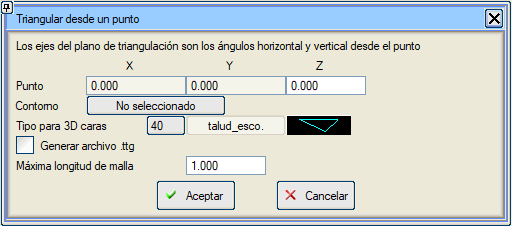
- Başka bir Y.N.B. Ekle: Mevcut Y.N.B.'nin noktalarını, bir veya daha fazla, aynı tipteki konturun içinde, başka bir Y.N.B.'nin noktalarıyla değiştirmeye olanak tanır. Konturlar önceden Filtreler sekmesinde, Kontur ile filtrelemeyi aktif ederek, bir kontur seçerek ve gerekirse [ ]Aynı tip seçeneğini işaretleyerek tanımlanmalıdır. [ ] Başka bir Y.N.B. Ekle üzerine tıklandığında, noktalarını ekleyecek Y.N.B.'yi seçmeye olanak tanır.
- Z Ekle: Yoğun nokta bulutunun tüm noktalarının kotuna sabit bir değer (pozitif veya negatif) ekler.
-
 .xyz/.las/.tif/.ttp .xyz/.las/.tif/.ttp: Çeşitli dosya kaydetme işlemlerini gerçekleştirmek için bir açılır menü açar: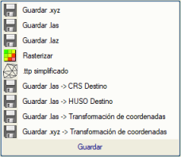
- .xyz / .las / .laz Kaydet: Aktif veritabanı ile bir .xyz, .las veya .laz dosyası kaydeder.
- Rasterleştir:
Lazer veritabanındaki noktalardan bir raster görüntü oluşturur. Oluşturulacak dosyanın adını, m/piksel cinsinden çözünürlüğünü ve formatını (Geotiff, ASC,...) soracaktır.
- Basitleştirilmiş .ttp:
Bir lazer veritabanından bir .ttp (üçgenleme dosyası) oluşturur, maksimum nokta sayısını ve piramidal bir filtreleme için başlangıç parametrelerini (dZmin, dZmax ve Maks. Mesafe) verir. Program veritabanını filtreler ve bir .las dosyası oluşturur; eğer bu dosyanın nokta sayısı hala öngörüleni aşıyorsa, bu .las dosyasıyla yeni bir veritabanı oluşturur, filtreleme parametrelerini artırır ve öngörülenden daha az sayıda nokta içeren bir veritabanı elde edene kadar süreci tekrarlar. Bu noktada, üçgenleme dosyası .ttp'yi oluşturur ve bu yüzeyi aynı zamanda mevcut üçgenleme olarak kaydeder.
- .las/.xyz Kaydet ->
Hedef CRS/Hedef DİLİM/koordinat dönüşümü: Hedef CRS'de, veya hedef dilimde, veya Araçlar/Koordinat Dönüşümü'nde belirtilen dönüşümü uygulayarak bir .las veya .xyz dosyası kaydeder.
- Verileri Düzenle:
Bu araç, veritabanındaki noktaları grup halinde veya tek tek düzenlemeye olanak tanır. Önce, noktaları olağan şekillerden herhangi biriyle (sınıfa göre, yansıtıcılığa göre, kota göre, gerçek renge göre) görüntüleyebileceğimiz bir çalışma alanı seçilmelidir.
- Sınıf Değiştir ve Sil:
Değişken yarıçaplı dairesel bir imleç kullanarak seçmeye/seçimi kaldırmaya olanak tanır. Seçilen elemanlar toplu olarak belirli bir sınıfa değiştirilebilir veya silinebilir.
- Bir Noktayı Düzenle:
çeşitli öznitelikleri düzenlemek için noktaları tek tek seçmeye olanak tanır: koordinatlar, yansıtıcılık, RGB renk, sınıf veya hatta onları silmek.
- +/-: RGB ve Yans. alanlarının yanında, bu kutucuklar aralık araçları için bir tolerans belirtmemize olanak tanır.
- RGB/YANS. Aralığı:
rengi/yansıtıcılığı, mevcut noktanın değeri artı (eksi) +/- kutucuklarında belirtilen tolerans aralığında olan tüm noktaları seçer.
- Sınıfı Değiştir:
noktanın sınıfını, sol taraftaki listede aktif olan sınıfa değiştirir. Aktif sınıf, Hedef sütununda seçili olandır.
- Geri Al:
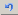 butonu, seçili noktanın özelliklerinde yapılan değişiklikleri geri alır.
- Değişiklikleri veritabanına uygula: yaptığımız düzenlemeleri kabul eder ve bunları kalıcı olarak veritabanına dahil eder.
- Eş Yükselti Eğrileri Oluştur:
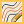 butonu, yüklenen çalışma alanındaki veritabanından eş yükselti eğrileri oluşturmamızı sağlar.
- Görüntü ile Renklendir:
Yüklemiş olmamız gereken bir arka plan görüntüsünün renginden yola çıkarak lazer veritabanındaki noktalara renk (RGB, "gerçek renk") verir.
- Kotları Yumuşat:
Bu seçenekle, noktaların orijinal konumunu değiştirmeden sadece kotlarını çevresindekileri kullanarak yumuşatma imkanımız vardır. Dolayısıyla lazer veritabanını yumuşatmaya olanak tanır. Aşağıdaki bilgiler gereklidir:
- Noktalar arası mesafe:
Yeni veritabanı, düzenli bir grid üzerinde yer alan noktalardan oluşur ve burada grid'in çözünürlüğü verilir. Bu mesafe, orijinal verilerin ortalama nokta mesafesinden daha büyük olmalıdır.
- Arama mesafesi:
Her yeni nokta, kotunu hesaplamak için bu mesafe içindeki noktaların kotunu kullanır.
- Ağırlık katsayısı ve
ağırlık eğrisi: Daha yakın noktalara daha fazla, daha uzak olanlara daha az ağırlık vermek için bir Gauss eğrisi kullanılır.
Renk, yansıtıcılık ve sınıflandırma en yakın noktadan miras alınır. Başlangıçta elde edilen veritabanı orijinaliyle aynı hücrelere sahiptir, bu nedenle nokta yoğunluğu çok daha düşükse, bir .las dosyası kaydetmek ve bu dosya ile veritabanını yeniden oluşturmak tavsiye edilir.
Bu yeni veritabanıyla eş yükselti eğrileri oluşturulduğunda, orijinal veritabanına göre daha yumuşak çizgiler elde edilir, çünkü uygun parametreler kullanılarak oldukça fazla gürültü giderilebilir.
- Kübaj Hesabı:
İki lazer veritabanı arasında kübaj hesaplamaya olanak tanır, bunu sadece bir kapalı alanda yapma veya yarma ve dolgu alanlarını oluşturma seçeneği de vardır. Diğer iki veritabanının kot farklarıyla, düzenli bir grid üzerinde üçüncü bir veritabanı oluşturur.
- Kilometreye Göre Şerit:
Eğer Güzergah Esaslı Projeler modülünde, Plan veya Boykesit sekmesinde isek ve Yoğun Nokta Bulutları iletişim kutusuna erişirsek, Yardımcı Araçlar sekmesinde [KM'ye Göre Şerit] aracını buluruz. Bu araç, eksenleri ve üzerlerindeki kilometreleri sayısal veya grafik olarak seçmeye olanak tanır ve kilometre bazında ve eksene olan mesafeye göre bir yarı genişlikle bir şerit tanımlar, böylece normal (2B veya 3B) veya OpenGL'de yüklüyse nokta görselleştirmesi bu şeritle sınırlanır. Eğer kilometreleri tıklamaya devam edersek ve OpenGL penceresi açıksa, görselleştirme değişikliği anında olur.
Farklı bir .per dosyası seçilebilir. Bu çıktı dosyası, ISPOLn.per dosyasına ek olarak seçilen aralıktaki YNB noktalarını da içerecektir. ISPOLx.per'e ekle aracı, bu dosyanın profillerini dolaşır ve her profil için belirtilen maksimum nokta sayısını elde etmek için Şeridin KM yarı genişliğini otomatik olarak ayarlar, boyuna eğimi dikkate alarak bunları KM üzerine yansıtır ve onlara belirtilen boyutta bir sembol ve orijinal rengin yoğunluğuna bağlı olarak bir sembol aralığından alınan bir tip atar. Bu semboller hem enkesit editöründe hem de bir enkesit çiziminde görülebilir. Eğer Yüzey Oluştur seçeneği aktif edilirse, profildeki bulut noktalarını birleştirerek kapalı bir yüzey oluşturulur; bunun için yüzeyin tipini tanımlamak ve noktaları sıralamak için bir açısal referans yapılandırmak gerekir, böylece bu yüzeyle ölçümler yapabiliriz. 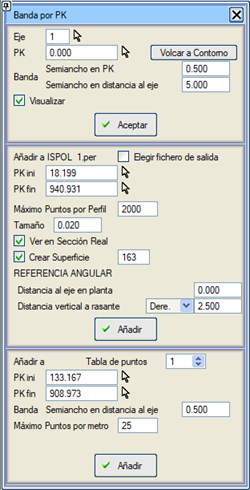
Gerçek Kesitte Gör: Aktif edilirse, imleci tanımlanan kilometreler arasında eksen üzerinde hareket ettirdiğimizde, Kesit penceresine Yoğun Bulut'un noktaları eklenir ve bu profilleri düzenleyebiliriz.
Kontura Aktar seçeneği, kilometreler arasındaki boşluğun kapalı alanıyla bir çizgi oluşturur ve bunu filtrelemek için kontur olarak seçer.
Boykesitte ve boykesit çiziminde eksene yansıtılan bulut noktalarını görselleştirmek için Nokta Tablosu'na eklemek mümkündür. Bu seçeneğe Boykesit menüsünden erişilebilir.
Bu kutudan ayrıca, grafik nesnelerin kotunu değiştirmeye olanak tanıyan aynı yardımcı araçlara da erişilir: Kot Al, çizgileri kota getir, sembolleri kota getir...
- Maksimum Ağ Uzunluğu: Bir nokta bulutu SAM yüzeyi olarak kullanıldığında ve o menüde nokta bulutunu üçgenlerle değil, ağlarla kesmek seçildiğinde, burada bir maksimum ağ uzunluğu belirtebiliriz. Üçgenleme yaparken, izin verilenden daha büyük ağlar olmayacak şekilde üçgenleri filtreleyecektir.
3B Veri Düzenleme
Bir küre veya bir kutu aracılığıyla hacimsel nokta seçimi. Her ikisi de genel koordinatlar aracılığıyla manuel olarak konumlandırılabilir veya Yoğun Nokta Bulutları görüntüleyicisinde bir tıklama ile hacim yerleştirilebilir. Hacim düzenlenebilir; küre durumunda yarıçap belirtilerek ve kutu durumunda genişlik, uzunluk ve yükseklik belirtilerek.
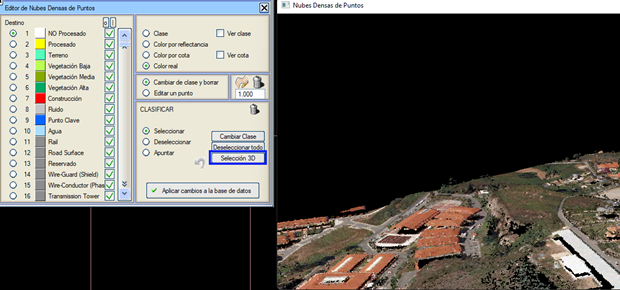
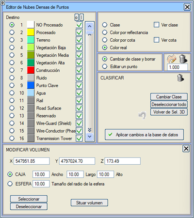
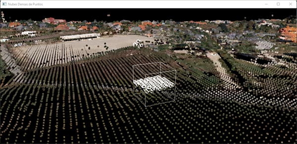
Yüklenmiş Veritabanları
Aynı anda en fazla 5 lazer veritabanı ile çalışabileceğiz. Yeni bir veritabanı oluşturulduğunda ve okunduğunda, bilgisi mevcut veritabanına geçer.
Aşağıdaki pencereden bir veritabanı yüklendiğinde, bilgisi okunur ve aktif veritabanı olur.
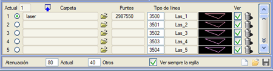
Bir SAM yüzeyi, mevcut beş lazer veritabanından herhangi biriyle tanımlanabilir ve aynı anda birkaç lazer veritabanından enkesitler kesilebilir.
Soluklaştırma ve Mevcut kutucukları aracılığıyla, mevcut olarak yüklenmiş Lazer dosyasına ve diğerlerine bir yüzde vererek görselleştirmeyi azaltabilirim.
[Başlat], [Kaydet] ve [Yükle] butonları, sırasıyla, projede tanımlanan yüzeyleri .cnd dosyaları kullanarak başlatmaya, kaydetmeye ve geri yüklemeye olanak tanır.
Aynı anda 100 adede kadar yoğun nokta bulutu veritabanına sahip olma imkanı vardır.
|